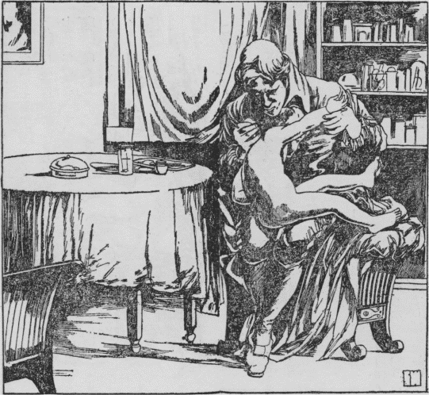

いまからおよそ百五十年前のことです。英国南部のバスという
市で、ある夜
盛大な
晩餐会が開かれました。
集まったものは、政治家、実業家、医師、軍人など数十人、いわゆるその
市およびその付近で、名をあげている人ばかりでありました。当時まだ電燈は発明されておりませんでしたから、いく本かの美しい
装飾をほどこした銀色の
燭台が、テーブルの上に立て並べられ、
皎々たる光のもとにいとも
静粛に、食事がすまされました。
食後人々はテーブルをかこんだまま、
紅茶をすすりながら、いろいろの話にふけりました。と、いつのまにか、すみの方で
議論めいた口調で話すものがありましたので、一同は、言いあわせたように、口をつぐんで、その
議論に耳を
傾けました。
「
無論、
私は
炎の中の方が熱いと思います」とひとりの
紳士がいいました。
「そうじゃありませんよ。やっぱり炎を少しはなれたところの方がかえって熱いですよ」と、他の紳士が反対しました。
紳士たちは、
燭台に波うって燃えている
蝋燭の炎をながめながら、その炎の内部が熱いか、あるいは炎をはなれた少し上のところが熱いかを
論じあっているのでありました。
人々は、興に乗じて口々に
賛否両説を
吐きました。炎の中が熱いというもの、炎の少し上のところが熱いというもの、いずれもほとんど同数の賛成者を得て、なかなか解決がつきません。それぞれいろいろの
理屈を考えだして自説を主張しましたが、だれも、いずれが正しいか、
審判をあたえるものはありませんでした。
先刻から、
賛否いずれともいわなかった、年のころ二十五、六
歳の
小柄な紳士は、そのとき
突然立ちあがって、
「みなさん」と
叫びました。
人々は、ぱったり議論をやめて、一
斉にその紳士を見つめました。
すると、かれは、だまって、前にある一本の
燭台をひきよせ、右手の指を、いきなり、
蝋燭の炎の中につきさしました。
一秒、二秒。紳士はおもむろに指を引きました。
一同はあっけにとられて、ふしぎな芸に見いりました。
紳士はそれから、ふたたびその指を、炎の少し上に近づけましたが、近づけるやいなや、
「熱ッ」
と、小声でいって手を引きました。
「みなさん」と、
青年紳士は、にっこりわらいました。「これで、どちらが熱いかおわかりになりましたでしょう」
こういって、やおら席につくと、われるような
拍手が起こって、人々は口々に、その紳士の
機知を
賞讃しました。
そのあくる日のことです。
バスの
市から少しへだたったバークレーという町に住んでいるこの青年紳士のところへ、ひとりの中年の紳士がたずねてきました。
この青年紳士は、客を見て、
「おや、昨夜はいろいろ失礼いたしました。どこか、お悪いのですか」とたずねました。
この青年紳士は医師だったからです。
「いえ」と、客は答えました。「私はご承知のとおり、インドの植民地と関係のあるものですが、昨夜のあなたのお
知恵と
決断力とに感心して、ぜひ、植民地へいって、かの地の
同胞たちを助けてやっていただきたいと思い、おうかがいしたのでございます。
俸給はいくらでもおのぞみどおりだしますから、どうか二、三年、あちらでご開業ねがえますまいか。植民地では、よい医師がないので、みんなが本当に
困っております」
青年医師は客の語るのを、つつましやかにきいておりましたが、このとき、きっぱりいいました。
「そのご親切はありがとうございますが、私はこれから一
生涯、
故郷をはなれない決心をいたしました。私はこの土地で生まれ、早く両親を失って、
兄さんのおかげでそだち、ロンドンへまで学問にやってもらって、どうやら、一人前の医者になって帰ってきました。そうしていまは兄さんに同居させてもらっているのですから、兄さんの生きておられるあいだは、ここを動きません。たとえまた、兄さんの百年の後においても、この美しい
景色をもった
故郷をどうして見すてることができましょう。
翠緑の
樹につつまれた山、
紺碧の水をたたえた谷。春がくれば
錦をかざる牧原、秋がくればたわわにみのる
果樹園。このようにめぐまれた土地は、世界のどこにもないと思います。せっかくのおぼしめしですけれど、インドゆきはおことわりしたいと思います」
頑として動く気色もありませんでしたので、客は失望して帰りました。
読者諸君！ この、機知に
富み、故郷を熱愛する青年医師はそもそもだれでありましょう。これこそ、後に
種痘法を発見して、人類の恩人とあおがれるにいたった、わがエドワード・ジェンナーその人であります。
みなさんは、
風呂にはいったとき、きっと、自分の二の
腕についている三つ四つの、
種痘のあとに注意したことがありましょう。むろん、風呂にはいるたびごとに注意する人はありますまいが、この種痘がいったいなんのためにほどこされたものであるか、考えてみたことがありますか。自分で考えたことはなくとも、お
父さんやお
母さんから教えてもらったことはあるでしょう。
種痘はいうまでもなく、おそろしい
天然痘という病気を防ぐためにほどこされるのであります。ところが、いまでは、種痘のために天然痘というおそろしい病気にかかるものが非常に少なくなったので、天然痘のおそろしさを知っている人はいたって少ないのであります。もし天然痘のおそろしさを知り、天然痘にかかった
患者の身体のものすごさを一目でも見たならば、本当に、種痘法を発見した人をおがまずにはいられなくなるのであります。
ですから、ジェンナーの伝を書くにあたっては、どうしても
天然痘のおそろしさを
述べておかねばなりません。多分みなさんはペストやコレラのおそろしさを知っておられるでしょう。
種痘法の発見されなかった時分には、天然痘は実にペストやコレラよりもおそれられたものであります。いかなる階級の人も、
上はお
公卿さまから、
下はいやしい民にいたるまで、天然痘の病原体は、なんの
容赦もなくおそいかかりました。一たび
疱瘡（
昔は天然痘のことを疱瘡といいました）がはやるということが伝わると、人々は
愕然として色を失い、ことに
子供を持つ親は、ぶるぶるとふるえたものであります。
それもそのはずです。十人疱瘡にかかれば三人や四人はかならず死んでしまいました。たとえ
治っても、あるいは眼がつぶれたり、あるいはあばたが残って、一
生涯、その人はいやな思いをしなければなりません。ことにそれが女の子であると、成長の後はおよめさんにもらってくれる人が少ないのでしたから、女の子をもった親は、ことさらにおそろしがったものです。
なかんずく、病中の
患者のありさまは、目もあてられぬほど、いたいたしいものです。高い熱がでて苦しむうちは、まだよいとして、全身に、すき間もなくふきでものがでて、それが
膿をもって黄色に変じますと、まるであの
菊人形のように……きくならば美しいですけれど、それがうみをもった黄色のできものでおおわれた
有様を想像してごらんなさい。きっと
背すじに冷たいものが流れるでありましょう。さらにそのふきでものが
乾くときは黒赤色に変じますから、全身はあんの中へころがったようになり、顔は
おはぎを見るようで、どこに目があるやら鼻があるやらさっぱりわからないのであります。
このおそろしい病は世界のいずこの国にも流行してときには一ヵ年に何百万という
同胞を失った国もありました。日本でも古くからこの病が流行し、どうしておこるかわからぬので、
疱瘡をつかさどる神さまがあって、その神様がいかって疱瘡をはやらせになるから、疱瘡にかからぬようにするには、
疱瘡神をおがめばよいといって、
戸ごとに祭ったものであります。通常疱瘡神として
住吉大明神を祭ったものでしたが、いくら住吉大明神を祭っても、疱瘡は
依然としてその勢いをたくましゅうしたのであります。
このおそろしい病気も、いまは、
種痘によって、完全に防げるようになりました。
疱瘡神を祭らなくなっても、種痘をさえほどこせば、たとえときどき
天然痘が流行しても、少しもおそれることなく
暮らせるようになりました。そうして各国で、年々何十万という人の生命が救われることになったのであります。
しかも、このとうとい種痘法は、たったひとりの力で発見されました。なんとみなさん、
風呂へはいって、二の
腕の
種痘のあとをみたならば、人類の一員としてわがエドワード・ジェンナーに感謝せざるを
得ないではありませんか。
これほどとうとい
種痘法のことですから、それが決して、容易なことで発見されたものとは、みなさんも思わないでしょう。いかにもそのとおりです。ジェンナーが、種痘法を発見するまでには何十年という長いあいだの苦心がついやされたのであります。
ジェンナーは、一七四九年五月十七日に、前記のバークレーといういなか町の、ある牧師の三男として生まれました。八、九
歳の時分から、いまでいえば、理科が非常にすきでした。その地方は化石がたくさんでますので、かれはそれを拾ってきては、
部屋のたなにならべて分類しました。また、りすの
巣を集めたり、めずらしい植物を
採集してきては、兄さんたちにその名をきいて、たくわえておきました。
小学校を卒業すると、かれはサドベリーという町のある医師のところへ書生として住みこみ、医学を勉強して、後には
代診をつとめました。かれは非常に勉強家でしたが、音楽や詩文をこのみ、ひまさえあればバイオリンをひいたり、ふえをふいたり、また、詩を作りました。非常に想像力が強くて、いわゆる一をきいて十をさとるという風でしたから、先生も非常に喜んでかれを教育したのであります。
かれが代診をやっている時分のことです。ある日、いなかからひとりの
女患者が診察を受けにきました。
職業をたずねると、
「わしは、
牛の
乳をしぼって
暮らしていますだ」と、いなか言葉で答えました。
その地方は
牧畜がさかんで、住民は多く牛を
飼い、したがって女たちは
搾乳に
従事していたのであります。
ジェンナーはそのときまだ二十
歳にならぬ青年でしたが、ていねいに
診察してから、
「おまえさんは熱がある。多分
風邪だと思うが、いま世間では
疱瘡がはやっているから、気をつけねばいけないですよ」といいました。
「疱瘡なら、わしは心配しなくてもよろしいだ」と、女は言下に答えました。
「え？ なぜ？」
「わしは、このあいだ、牛の疱瘡が、これこのとおり手にうつりましただ。ですから、もう疱瘡にはかかりませんて」
こういって女は、手の
甲の、牛の疱瘡にかかったあとを見せました。
ジェンナーは
不審に思いました。
乳をしぼる女が牛の
疱瘡にかかって、手にできものをつくることは、よく知っていましたけれど、牛の疱瘡にかかったものが、人間の疱瘡にかからないということを聞いたのははじめてだったからです。
「でも、牛の
疱瘡と人間の疱瘡とは
性質がちがうではないかね」とジェンナーはたずねかえしました。
「
性質がちがうか、どうだか、わしは知りませんだが、わしひとりでなく、みんながそういっていますだ」
このとき、ジェンナーの頭に、ある考えがひらめきました。そうだ、
乳をしぼる女がみんなそういうことをいっているとすれば、まんざらうそではないであろう。もしそれが真実だとすれば、牛の
疱瘡を人間にうつせば、もはやあのおそろしい疱瘡にかからないようにすることができるではないか。……みなさん、後にわが人類を救った
種痘法なるものは、実にこの
瞬間に考えだされたものであります。
このことがあってから、ジェンナーは、たびたびその地方の
搾乳婦にあって、いよいよ先日の
女患者の言葉が真実であることをたしかめました。牛の
疱瘡は非常に軽いもので、人間にうつったときも、うみのついた部分に、一つ二つのできものができるだけでしたら、軽い
牛痘のうみをうえて、あのおそろしい疱瘡を防ぎ
得るようになったら、どんなに人類のためになるか知れない。なんとかして自分一代には、この予防法を実行したいものだと、ひそかに決心を定めたのであります。
かれはある日、先生にむかって自分の考えを述べました。すると、先生は、
「いなかの女のいうことなどあてになるものか」といって相手になってくれませんでした。
そこでかれはその地方で開業している他の医師に自分の考えをうちあけました。すると、その医師は、
「きみ、牛と人間とを同日に談じてはいかぬよ」と、あざけるようにいいました。
その後、だれに告げても、みんなこのように、本気になって相談にのってくれませんので、ジェンナーはもう、だれにも話さぬことに決心しました。
かれこれするうち、ジェンナーは二十一
歳の春を
迎えました。いなかでは思う
存分の修行ができぬので、かれはロンドンへでて、当時外科医として、第一人者に数えられていたジョン・ハンター
博士のもとに弟子入りをしました。このハンター博士は気の短い人ではあるが、非常にすぐれた学者で、当時四十二
歳でありましたが、ジェンナーの温順な性質がすっかり気にいって、
弟子というよりもむしろ
友達あつかいにしてかわいがりました。
ハンター先生の教えを受けるにしたがって、ジェンナーは先生が
尋常の医学者でないことを知り、先生ならば、自分が年来いだいている考えに賛成してくださるにちがいないと思ったので、ある日、ジェンナーは、
「実は先生、これまで、だれに話しても、せせらわらって相手にしてくれませんが、先生ならばきっと、
私の考えにご同意くださるだろうと思います。私の地方では牛の
疱瘡にかかったものは
天然痘にかからぬといういいつたえがございます。その後、私は注意して、
乳をしぼる人たちにききましたが、どうやらそれは本当のようであります。そこで私は、牛の疱瘡を人工的に人間にうえたならば、おそろしい天然痘を予防して、人類を救うことができると思いますが、先生はこの私の考えを、どうお思いになりますか」と、返答いかにと、おそるおそるつげました。すると、
「おお、そうか？」と、ハンターは、言下に答えました。「それは本当か、そういう事実があるのか。それは実にすばらしいことを考えたね。大いに研究するのだね。考えまよっては何事もらちがあかぬから、機会があったら、実際にやってみることだね。だが、人間の生命にかかわることだから
疎漏のないようにやりたまえよ。何事も
辛抱が
肝腎だ。根気よく目的にむかって進みたまえ」
これをきいたジェンナーは、目に
涙をためて喜びました。ハンター先生のこの一言は、どんなにかジェンナーをはげましたことでしょう。世に「
知己」という言葉がありますが、ハンターこそはジェンナーのよき知己であったといわねばなりません。
その後ハンター先生はジェンナーのこの考えを他人にも
吹聴してきかせました。そうして、おりあるごとに、ジェンナーに向かって、
「まよわないでやってみたまえ、
辛抱して
疎漏のないように」と、例の
激励の言葉をくりかえしました。
かくて三ヵ年、ジェンナーはハンターの
薫陶を受け、いよいよ
郷里へ帰って開業することになりましたが、わかれるときにも、ハンター先生は、例の
激励の言葉をあたえました。
さてジェンナーは郷里へ帰るなり、すぐに材料を集めにかかろうとしましたが、いざ開業してみると、ロンドン帰りのお医者様だというので、
患者が門前に
殺到し、
寸暇もない
有様となってしまいました。かれは患者に対して、非常に親切でして、重病患者などは、その家に
寝とまりして
診療に
従事するという風でしたから、またたくまに四、五年の月日を送ってしまいました。けれども、そのせわしいあいだにも、
種痘のことは決してわすれず、また博物学の研究をもおこたりませんでした。かの、ほととぎすが、他の鳥の
巣に
卵を生んで、その鳥にひなを育てさせるということを観察して、学界に報告したのは、ロンドンから帰ってまもないことでした。それほど、ジェンナーは自然を観察する
非凡な力をもっていました。それであればこそ、
搾乳婦の言葉をきいて、ただちに
種痘法に思いついたのです。ニュートンが
［＃「ニュートンが」は底本では「ニユートンが」］りんごの落ちるのを見て、これはりんごが落ちるのではなく、地球がひっぱるのだろうと考えて、万有引力の法則を発見したように、
偉人というものは、なんでもない現象から、おどろく事実を発見するものであります。ですから、おたがいに、この観察力を養成することが、なによりも必要なことであります。
さて、ジェンナーは、いつまでもぐずぐずしていては、恩師ハンター先生に対してももうしわけないと思い、二十九
歳のときいよいよ
種痘の研究にとりかかりました。研究にとりかかるといっても動物実験などをするのではありません。まず
牛痘にかかった人をたずねだして、その人がはたして、
天然痘の流行時に、
罹病をまぬかれたかどうかを正確にとりしらべるよりほかはないのでした。
だんだんとりしらべるにつれ、いよいよ年来の考えをたしかめるだけでありました。もうこのうえは、実際に人間に牛痘をうえて、実験してみるよりほかはないと思いましたが、さてそれは容易のことではありません。人間
一人の生命にかかることですから
粗忽にはできません。かような実験は
小児でなくてはできませんが、さて自分には子供がなし、むやみに他人の子をかりてくることもできません。
それに、その地方のお医者さんたちは、あいかわらずジェンナーの考えをあざわらっておりましたので、うっかり、他人の子に実験しようものなら、どんなおそろしい
非難を受けるかもしれません。
とかくするうちに十年の
歳月がすぎました。みなさん十年といえば実にながい年月です。そのあいだのジェンナーの気持ちを考えてみてください。自分の信念はいよいよたしかになるが、いざ実験するとなると大きな
困難に面しなければならぬとは、なんというじれったいことでしょう。が、時節はきました。その年、すなわち、三十九
歳のとき、ジェンナーは、あるやさしい婦人と
結婚したのであります。
翌年の春、ジェンナー
夫婦は男の子をもうけ、エドワードと命名しました。そのときジェンナーはこの子が一定の
年齢に達したら、実験を試みようと決心しました。そうして、その子が一年六ヵ月になったとき、ジェンナーは、ぶたの
疱瘡のうみを、その腕にうえたのであります。

なぜ、かれがぶたの
疱瘡をうえたかと申しますと、かれは人間の疱瘡も、牛の疱瘡も、ぶたの疱瘡も、病原はにかよったものだと考えたからであります。おそらく、そのとき、牛の疱瘡のうみを得ることができなかったのでしょう。そうして一日も早く自分の信念をたしかめたかったのでしょう。わが子の生命に関する重大な実験をもあえてしたかれの
悲壮な気持ちは察するにあまりあります。まかりまちがえば最愛のわが子を殺すことになります。それにもかかわらずわが子で実験しようとしたのは、かれの信念が岩のごとくかたかったことがわかります。一日も早く人類が救いたいという心は、ついにわが子の実験となったのであります。
エドワードにぶたの
疱瘡のうみをうえると八日目にできものが生じました。そこでかれは
天然痘のうみをうえましたが、エドワードは天然痘にかかりませんでした。
その二年の後、ジェンナーはエドワードにまたまた人間の
疱瘡のうみをうえました。すると十日間にふくれあがってきましたからジェンナーは大いにおどろきましたが、幸いに
拡がらずにすみました。それからその
翌年、いま一度人間の
疱瘡をうえました。が、少し水ぶくれのようなものができただけで、エドワードは天然痘にはかかりませんでした。
これによって、ジェンナーはとにもかくにも自分の信念をたしかめましたが、もとよりまだ十分とはいえません。
牛痘にかかった人のうみを他の人間にうつして実験しなければ、確実に自分の考えを
証拠立てたとはいえませんから、なんとかしてその実験をする機会はないかと、
辛抱に辛抱をかさねて待ちました。その間、医師たちの反対意見などが発表されて、ジェンナーは少なからず、気をもみましたが、かれの信念はますます堅くなるだけでありました。
ついに時節は
到来しました。かれが四十七
歳のときすなわち
西暦一七九六年のことです、数えてみれば研究にとりかかって二十年近くの
歳月を経ましたが、その年の春ごろから
天然痘が流行しましたので、いよいよ最後の実験にとりかかろうと決心し、最初にだれにうえるべきか、適当な
小児を物色しました。わが子のエドワードはもはや実験には役にたちませんので、付近の少年のうちからさがしだそうとすると、幸いにもジェームス・フィップスという八
歳の少年を得たのであります。ちょうどそのとき、サラ・ネルムスという
搾乳婦が、
牛痘に
感染しておりましたので、その女のうみをジェームス少年にうえることにしました。
五月十四日！ この日は人類の永遠に記念すべきとうとい日です。この日にジェンナーは実験をこころみることにしました。その日ジェンナーは朝早く起きて、神様に
祈りました。牧師の家に生まれましたから、小さい時分から祈りにはなれておりましたが、その朝ほど心の
奥底から祈ったことはいままでにありませんでした。最初考えたときから約三十年、とちゅうでわが最愛の子に実験して、いよいよ確信を
得たというものの、もしまちがえば
他人さまの子を
犠牲にしなければなりませんから、そのときのジェンナーの祈りこそは
純粋なものであったにちがいありません。
高まる
心臓の
鼓動をおさえつけながら、ジェンナーはついに、
搾乳婦から取ってきたうみを、ジェームス少年にうえたのであります。
少年はあくる日からかゆみをおぼえ、二、三日の後その部が
化膿しました。そうして日を経るにしたがってかわいてゆきました。これは
勿論ジェンナーの予期したとおりでしたが、さてこれからが大問題です。すなわちこの少年に
天然痘患者のうみをうえても、もはや天然痘にはかからぬことをたしかめねばなりません。
とかくするうち、少年の
腕のできものはすっかりかわきましたが、ジェンナーは、おいそれと第二の実験にはかかり得ませんでした。が、ぐずぐずしていてはならぬので、ついに七月一日に天然痘患者のうみを取ってうえたのであります。
その
当座のジェンナーの心配はみなさんに察することができましょう。いまにもジェームスがおそろしい熱をだしはしないかと気が気でありませんでしたが、二日をすぎ三日をすぎ、一週間を経てもなんともなく、ついにジェームスは
天然痘にかからなかったのであります。
読者諸君！ かくてジェンナーの考えは完全に
証明されたのであります。そのときのジェンナーの喜びはどんなだったでしょう。ここに、人類が永遠に救われる
基礎ができたのであります。かれの
郷里では、いま年々五月十四日に種痘祭がおこなわれるのであります。
この実験に力を得て、その後二年間に二十三回同じような実験をくりかえし、いよいよ
牛痘をうえれば、天然痘にかからぬということがわかったので、これを書物に書いて学界に報告したのであります。その中には次男のロバートにほどこした実験も書かれてありました。
ところがこの報告を読んだ人たちは、感心すると思いのほか、かえってあざわらいました。「牛痘をうえるのは人間を牛あつかいにすることだ、けしからぬ」「牛痘をうえると、その子は牛のような顔になって、モーモーとなく」というようなことをいいふらすものもありました。そうしてわざわざ手紙を送って、ジェンナーにくってかかる者もありました。
けれどもジェンナーは、じっと
辛抱して、なおも実験をかさね、そのうちには、世人がみとめてくれるであろうと確信しました。ただかれのかなしかったことは、かれを
激励してくれた恩師ハンターがその五年前に死んだことです。恩師が生きておられたらまっ先に賛成してくださったろうにとさびしい思いをしたのであります。
けれども、正しいものはついに勝ちます。かれの
種痘法は、
欧州諸国およびアメリカで
採用されて、その説の正しいことがたしかめられました。さあ、そうなると、本国では、じっとしてはおられません。議会は、一八〇二年と
［＃「一八〇二年と」は底本では「一六〇二年と」］一八〇七年の二回に、約二十万円の金を
提供して、ジェンナーに実験費としてあたえることになりました。そうして一八二三年かれが死ぬまでには、かれの説は
不朽のものとしてみとめられ、かれは大満足のうちに、
瞑目したのであります。
種痘法が日本へ輸入されたのは一八四九年すなわち
嘉永二年のことでありまして、それ以後日本国民もジェンナーの
恩恵に浴することになったのであります。げに
偉大なるものは人の力ではありませんか。
（昭和三年五月号）